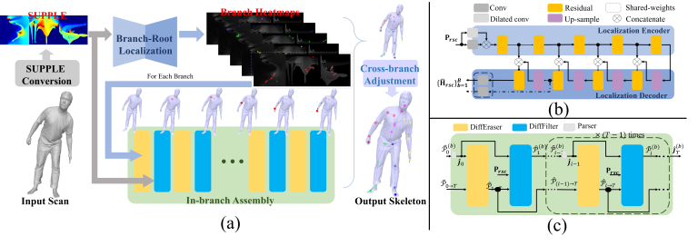
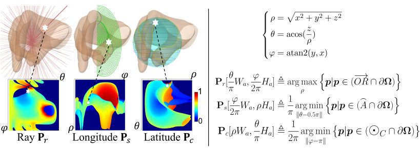
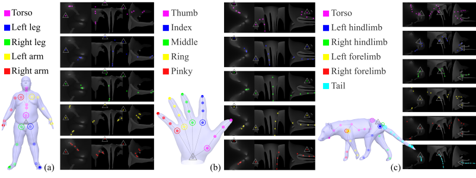
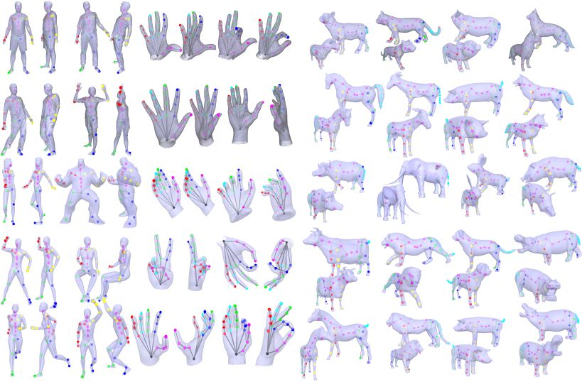

IEEE Transactions on Visualization and Computer Graphics (TVCG), 2023
Skeleton Extraction for Articulated Objects with the Spherical Unwrapping Profiles

Skeleton extraction process with SUPPLE representation.
(a) The overview of whole pileline. (b) CNN modules to extract branch joint heatmaps from unrestricted mesh; (c) CNN modules to forward alternately and recurrently to predict the single joint heatmap according to the proximal-to-distal order within each branch. Abstract
Embedding unified skeletons into unregistered scans is fundamental to finding correspondences, depicting motions, and capturing underlying structures among the articulated objects in the same category. Some existing approaches rely on laborious registration to adapt a predefined LBS model to each input, while others require the input to be set to a canonical pose, e.g. T-pose or A-pose. However, their effectiveness is always influenced by the water-tightness, face topology, and vertex density of the input mesh. At the core of our approach lies a novel unwrapping method, named SUPPLE (Spherical UnwraPping ProfiLEs), which maps a surface into image planes independent of mesh topologies. Based on this lower-dimensional representation, a learning-based framework is further designed to localize and connect skeletal joints with fully convolutional architectures. Experiments demonstrate that our framework produces reliable and accurate skeleton extractions across a broad range of articulated categories, from raw scans to online CADs.
Surface Representation

SUPPLE definition. Similar to the Cartesian, there exist three "orthogonal" projections in the spherical coordinate system, i.e., mapping all points with the same coordinate values of any two dimensions but different in the remaining one to the same position of the image plane. These projections exactly correspond to the three profiles of SUPPLE.
Skeleton Branch Partitions

Branch partitions and heatmaps of different articulated categories. Each articulated category skeleton is divided into several branches according to its kinematic characteristics and contains a similar number of joints. (a) Human body skeleton with 5 branches; (b) Human hand skeleton with 5 branches; (c) Quadruped skeleton with 6 branches; For each category, joints with the same color are from the same branch. To better observe the correspondence, each branch heatmap of each instance takes the corresponding \supple surface graph as the background.
Results

Qualitative skeleton extraction on different articulated categories. Each mesh is viewed from two perspectives. Evaluated instances are collected from scans or online.
Reference
Zimeng Zhao, Binghui Zuo, Wei Xie and Yangang Wang. "Skeleton Extraction for Articulated Objects with the Spherical Unwrapping Profiles". IEEE Transactions on Visualization and Computer Graphics (TVCG), 2023.
Acknowledgments: This work was supported in part by the National Natural Science Foundation of China (No. 62076061), in part by the Natural Science Foundation of Jiangsu Province (No. BK20220127), by the ``Young Elite Scientists Sponsorship Program by CAST"(No. YES20200025) and by the ``Zhishan Young Scholar" Program of Southeast University (No. 2242021R41083).